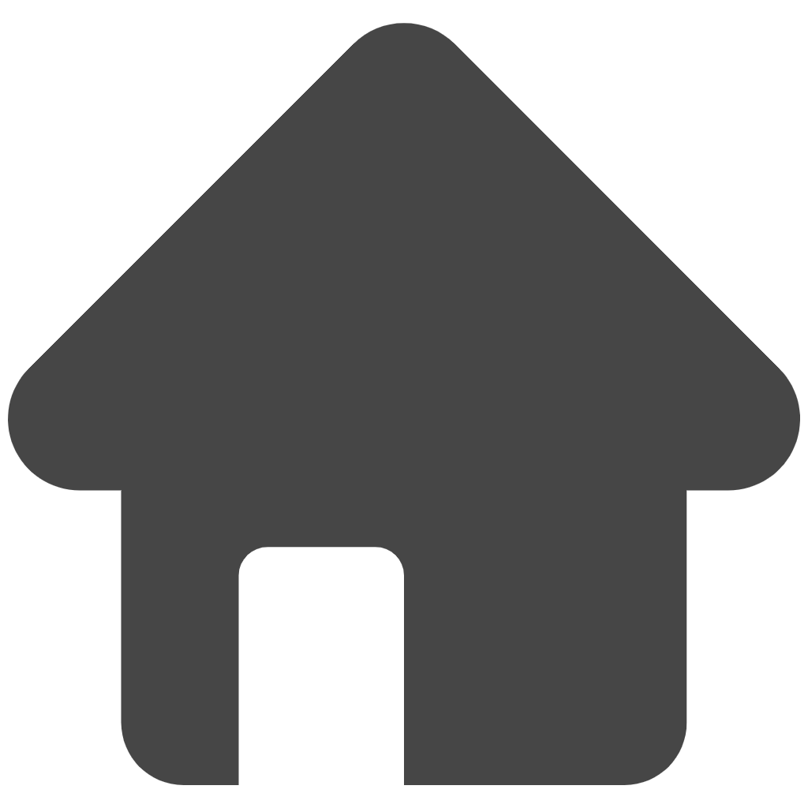

Labor
Linko

Home
Message
Notification
Imran Shah
Labor Worker
My Profile
Saved Job
Settings
Help & Support
Logout
Ali Ahmed
Hey, how's it going?
10:30 AM
Ameer Tunio
Hey, how's it going?
10:40 AM
Faraz Ali
I am Okay with this Price
10:21 AM
Samed Jonejo
Let's Start Work
10:30 AM
Ali Ahmed
Online
Hello! How are you?
10:15 AM
I’m good, thanks! What about you?
10:16 AM
Doing great, thanks for asking!
10:17 AM
Send